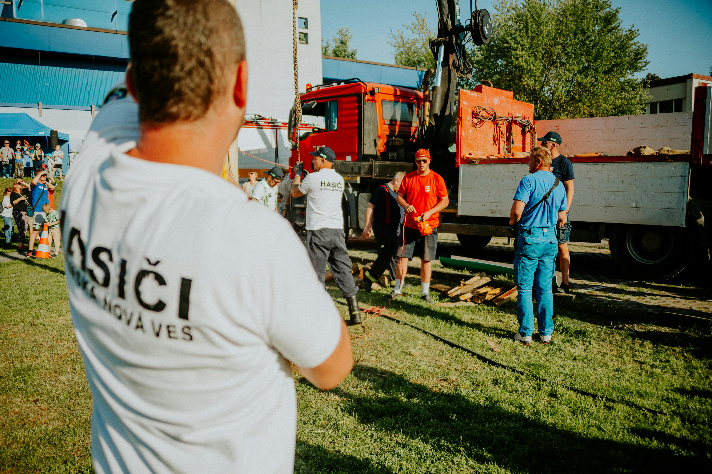

<main class="container">
        <section>
            <h2>Sobre a Organização</h2><!DOCTYPE html>
<html lang="pt-BR">
<head>
    <meta charset="UTF-8">
    <meta name="viewport" content="width=device-width, initial-scale=1.0">
    <title>ONG Ação Social - Página Inicial</title>
    <link rel="stylesheet" href="style.css">
</head>
<body>
    <header>
        <h1>ONG Ação Social</h1>
        <nav>
            <ul>
                <li><a href="index.html">Início</a></li>
                <li><a href="projetos.html">Projetos Sociais</a></li>
                <li><a href="cadastro.html">Cadastro</a></li>
            </ul>
        </nav>
    </header>

    <main class="container">
        <section>
            <h2>Sobre a Organização</h2>
            <article>
                <h3>Nossa Missão</h3>
                <p>A ONG Ação Social tem como missão transformar vidas através de projetos sociais que promovem educação, saúde e desenvolvimento comunitário. Acreditamos que cada pessoa pode fazer a diferença na construção de uma sociedade mais justa e igualitária.</p>
                
            </article>

            <article>
                <h3>Nossa Visão</h3>
                <p>Ser referência nacional em projetos de impacto social, reconhecida pela transparência, eficiência e compromisso com as comunidades atendidas. Buscamos criar um futuro onde todas as pessoas tenham acesso a oportunidades dignas de desenvolvimento.</p>
                
            </article>

            <article>
                <h3>Nossos Valores</h3>
                <ul>
                    <li>Transparência em todas as ações</li>
                    <li>Respeito à diversidade</li>
                    <li>Compromisso com resultados</li>
                    <li>Ética e responsabilidade social</li>
                    <li>Colaboração e trabalho em equipe</li>
                </ul>
                
            </article>
        </section>

        <section>
            <h2>Histórico e Conquistas</h2>
            <article>
                <h3>Nossa História</h3>
                <p>Fundada em 2010, a ONG Ação Social nasceu do sonho de um grupo de voluntários que desejava contribuir para o desenvolvimento de comunidades carentes. Iniciamos nossas atividades com um pequeno projeto educacional atendendo 50 crianças.</p>
                <p>Ao longo dos anos, expandimos nossa atuação para diversas áreas como saúde, capacitação profissional e apoio a famílias em situação de vulnerabilidade social.</p>
                
            </article>

            <article>
                <h3>Conquistas Recentes</h3>
                <ul>
                    <li>Mais de 5.000 pessoas atendidas em 2024</li>
                    <li>15 projetos sociais ativos</li>
                    <li>200 voluntários cadastrados</li>
                    <li>Parceria com 30 empresas e instituições</li>
                    <li>Reconhecimento nacional por boas práticas em gestão social</li>
                </ul>
                
            </article>
        </section>

        <section>
            <h2>Equipe e Estrutura Organizacional</h2>
            <article>
                <h3>Nossa Equipe</h3>
                <p>Contamos com uma equipe multidisciplinar composta por profissionais qualificados e voluntários dedicados. Nossa estrutura organizacional é formada por:</p>
                <ul>
                    <li>Diretoria Executiva</li>
                    <li>Coordenação de Projetos</li>
                    <li>Equipe de Captação de Recursos</li>
                    <li>Área de Comunicação e Marketing</li>
                    <li>Gestão de Voluntários</li>
                    <li>Departamento Financeiro</li>
                </ul>
                
            </article>
        </section>

        <section>
            <h2>Relatórios de Transparência</h2>
            <article>
                <h3>Prestação de Contas</h3>
                <p>A transparência é um dos nossos principais valores. Disponibilizamos anualmente relatórios detalhados sobre nossas atividades, resultados alcançados e aplicação de recursos financeiros.</p>
                <p>Todos os documentos podem ser acessados em nossa área de transparência, incluindo balanços financeiros, relatórios de impacto social e certificações.</p>
                
            </article>
        </section>
    </main>

    <aside>
        <h2>Informações de Contato</h2>
        <address>
            <p><strong>Endereço:</strong> Rua das Flores, 123 - Centro - São Paulo/SP</p>
            <p><strong>CEP:</strong> 01234-567</p>
            <p><strong>Telefone:</strong> (11) 1234-5678</p>
            <p><strong>E-mail:</strong> contato@ongacaosocial.org.br</p>
            <p><strong>Horário de Atendimento:</strong> Segunda a Sexta, das 8h às 18h</p>
        </address>
        
    </aside>

    <footer>
        <p>&copy; 2024 ONG Ação Social - Todos os direitos reservados</p>
        <p>CNPJ: 12.345.678/0001-90</p>
        <nav>
            <ul>
                <li><a href="index.html">Início</a></li>
                <li><a href="projetos.html">Projetos Sociais</a></li>
                <li><a href="cadastro.html">Cadastro</a></li>
            </ul>
        </nav>
    </footer>
    <script src="script.js"></script>
</body>
</html>